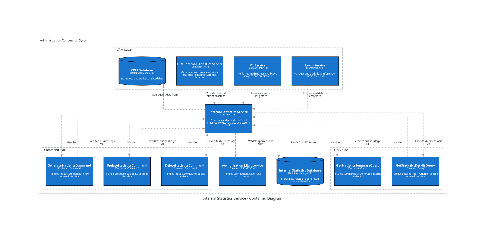

CRM System Internal Statistics Service¶
The Intrnal Statistics Microservice is responsible for handling recieving and saving the CRM Intrnal Statistics Service data: services distribution, situation characteristics, current leads summary tendency, general leads tandency
